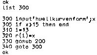
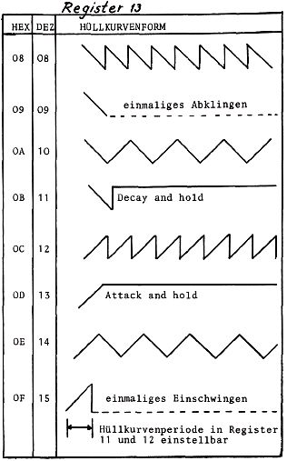
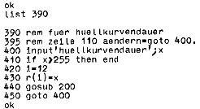

Nascom Journal |
Juli 1981 · Ausgabe 7 |
soundgenerator |
TEIL 2 |
von G.Böhm |
Mit dem Programm im letzten Heft konnten Sie die Tonhöhen der 3 Tongeneratoren variieren und konnten erfahren, wie überhaupt Informationen an den PSG gelangen. Im folgenden möchte ich die Funktion der restlichen Register besprechen; bei ihrer Programmierung wird analog zu den Tonhöhenregistern verfahren. Um die Register zu testen, sollten Sie zunächst das BASIC Programm aus dem letzten Heft laden, sodaß der Generator den bekannten Dreiklang mit wiederholter abfallender Hüllkurve produziert. Mit den aufgeführten Zusatzprogrammen können Sie dann die verschiedenen Register mit veränderten Werten füttern, um so die Klänge zu erzeugen, die Sie benötigen.
Das Envelope-Register kann 8 verschiedene Hüllkurven erzeugen, die z.T. einen andauernd an-und abschwellenden Klang ergeben oder nur einmal erklingen. Bei letzterer Form ist es wichtig, die Hüllkurvenform als letzten Parameter zu programmieren, sonst kann es geschehen, daß die Hüllkurve abläuft,bevor die anderen Parameter geladen sind, und der Ton unhörbar bleibt.
Besser als jede Beschreibung der Formen ist wohl folgendes Schaubild, das die Registerdaten in Hex und Dez und die entsprechenden Kurven zeigt.
Mit dem kleinen BASIC Zusatzprogramm können Sie sich „unseren Dreiklang“ mit verschiedenen Hüllkurven anhören. Wenn nach der Input-Aufforderung keine neuen Daten eingeben und nur NL drücken, erscheint die vorherige Kurve nochmals. Dies ist eine Erleichterung beim Testen von „verklingenden“ Hüllkurven; mit NL können Sie dabei den Anschlag eines Tasteninstruments imitieren.
zusatzprogramm zum test der huellkurvenformen mit ay-3-8910

In Register 12 wird die Grobstimmung, in Register 11 die Feinstimmung der Hüllkurvenperiode eingestellt. Meiner Meinung nach kommt es hierbei absolut nicht auf eine große Genauigkeit an, so daß man die Feinstimmung

vernachlässigen kann.(D.h. das Register 11 bleibt immer auf 0).
Für die Grobstimmung werden 8 Bit verwendet, die Länge der Hüllkurve variiert also zwischen 0 und FF hex (bis 255 dezimal).Mit dem kleinen Zusatzprogramm können Sie brauchbare Werte testen. Bei der Eingabe eines größeren Wertes kehren Sie wieder auf die Kommandoebene zurück.( Dies gilt übrigens entsprechend für die anderen BASIC Zusatzprogramme.)
test der huellkurvendauer (nur fine tune/coarse time bleibt0)

| Seite 8 von 20 |
|---|